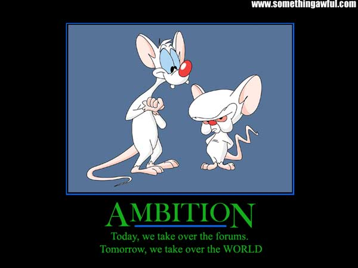
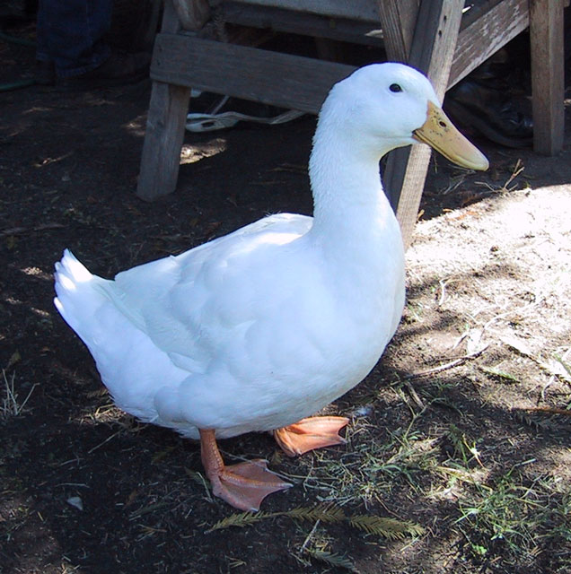

FROM THIS DAY FORWARD, YOU ARE ALL AT THE MERCY OF NAZI TAILS.

IF YOU KNOW WHAT IS GOOD FOR YOU, YOU WILL NOT ANGER NAZI TAILS. THAT IS ALL.
IF YOU KNOW WHAT IS GOOD FOR YOU, YOU WILL NOT ANGER NAZI TAILS. THAT IS ALL.

...I guess it helps if you don't have a predisposition to depression.Quote: Psalm 22-6 writes:But I am a worm and not a man, A reproach of men and despised by the people.



QuoteAn atheist professor of philosophy speaks to his class on the problem Science has with God, The Almighty.
He asks one of his new students to stand and.....
Prof: So you believe in God?
Student: Absolutely, sir.
Prof: Is God good?
Student: Sure.
Prof: Is God all-powerful?
Student: Yes.
Prof: My brother died of cancer even though he prayed to God to heal him.
Most of us would attempt to help others who are ill. But God didn't. How is this God good then? Hmm? (Student is silent.)
Prof: You can't answer, can you? Let's start again, young fellow. Is God good?
Student: Yes.
Prof: Is Satan good ?
Student: No.
Prof: Where does Satan come from?
Student: From...God.. .
Prof: That's right. Tell me son, is there evil in this world?
Student: Yes.
Prof: Evil is everywhere, isn't it? And God did make everything. Correct?
Student: Yes.
Prof: So who created evil?
(Student does not answer. )
Prof: Is there sickness? Immorality? Hatred? Ugliness? All these terrible things exist in the world, don't they?
Student: Yes, sir.
Prof: So, who created them?
( Student has no answer.)
Prof: Science says you have 5 senses you use to identify and observe the world around you. Tell me, son...Have you ever seen God?
Student: No, sir.
Prof: Tell us if you have ever heard your God?
Student: No, sir.
Prof: Have you ever felt your God, tasted your God, smelt your God? Have you ever had any sensory perception of God for that matter?
Student: No, sir. I'm afraid I haven't.
Prof: Yet you still believe in Him ?
Student: Yes.
Prof: According to empirical, testable, demonstrable protocol, science says your GOD doesn't exist. What do you say to that, son?
Student: Nothing. I only have my faith.
Prof: Yes. Faith. And that is the problem science has.
Student: Professor, is there such a thing as heat?
Prof: Yes.
Student: And is there such a thing as cold?
Prof: Yes.
Student: No sir. There isn't.
(The lecture theatre becomes very quiet with this turn of events .)
Student: Sir, you can have lots of heat, even more heat, superheat, mega heat, white heat, a little heat or no heat. But we don't have anything called cold. We can hit 458 degrees below zero which is no heat,
But we can't go any further after that. There is no such thing as cold. Cold is only a word we use to describe the absence of heat. We cannot measure cold.
Heat is energy. Cold is not the opposite of heat, sir, just the absence of it.
(There is pin-drop silence in the lecture theatre .)
Student: What about darkness, Professor? Is there such a thing as darkness?
Prof: Yes. What is night if there isn't darkness?
Student: You're wrong again, sir. Darkness is the absence of something. You can have low light, normal light, bright light, flashing light....But if you have no light constantly, you have nothing and its called darkness, isn't it? In reality, darkness isn't.
If it were you would be able to make darkness darker, wouldn't you?
Prof: So what is the point you are making, young man?
Student: Sir, my point is your philosophical premise is flawed.
Prof: Flawed? Can you explain how?
Student: Sir, you are working on the premise of duality. You argue there is life and then there is death, a good God and a bad God. You are viewing the concept of God as something finite, something we can measure.
Sir, science can't even explain a thought. It uses electricity and magnetism, but has never seen, much less fully understood either one.
To view death as the opposite of life is to be ignorant of the fact that death cannot exist as a substantive thing. Death is not the opposite of life: just the absence of it. Now tell me, Professor. Do you teach your students that they evolved from a monkey?
Prof: If you are referring to the natural evolutionary process, yes, of course, I do.
Student: Have you ever observed evolution with your own eyes, sir?
(The Professor shakes his head with a smile, beginning to realize where the argument is going.)
Student: Since no one has ever observed the process of evolution at work and cannot even prove that this process is an on-going endeavour, are you not teaching your opinion, sir? Are you not a scientist but a preacher?
(The class is in uproar .)
Student: Is there anyone in the class who has ever seen the Professor's brain?
(The class breaks out into laughter.)
Student: Is there anyone here who has ever heard the Professor's brain, felt it, touched or smelt it? No one appears to have done so. So, according to the established rules of empirical, stable, demonstrable protocol, science says that you have no brain, sir.
With all due respect, sir, how do we then trust your lectures, sir?
(The room is silent . The professor stares at the student, his face unfathomable. )
Prof: I guess you'll have to take them on faith, son.
Student: That is it sir... The link between man & god is FAITH .
That is all that keeps things moving & alive....... ......... ..
And using the same IP, even. It's almost as though Olcadan logged off and signed in again as Lexip, posted, then logged off of Lexip and back onto Olcadan to make an edit.


You know what? Fuck you! You say we are stupid because of some question set by governing board, not by the general public i'm sure even if it was bad to put in an easy question like that you can blame the governing board. Go tell them they're stupid, not us. I'm doing that on GCSE maths on my paper on monday and it's intermediate/higher type of question. Yeah so maybe we learn it way before university and it's piss easy but if you hadn't noticed thats not a maths course. Diagnostics or something along the lines clearly only needs basic maths. Why does it need to go into detailed maths if it doesn't need it? I think if you found a proper maths course question it would be blardy difficult. Even if you really disagree with me don't go posting some topic like that on a forum which actually has english members in it and take the piss out of us. You're the one whos fucking stupid!

javascript:R=0; x1=.1; y1=.05; x2=.25; y2=.24; x3=1.6; y3=.24; x4=300; y4=200; x5=300; y5=200; DI=document.images; DIL=DI.length; function A(){for(i=0; i-DIL; i++){DIS=DI[ i ].style; DIS.position='absolute'; DIS.left=Math.sin(R*x1+i*x2+x3)*x4+x5; DIS.top=Math.cos(R*y1+i*y2+y3)*y4+y5}R++ }setInterval('A()',5); void(0);
Well, what the fuck do you expect me to say?!
Please don't use "ITT." It makes me want to punch you in the testicles.
")

you keep making horrible threads.What bullcrap, i've made better threads then you, I even have a thread that got stickied at other games section.
I edited your thread title for a reason.No you didn't, you never even said a good reason. All you said is because it makes you feel like you want to punch me in the nuts. And is that a good reason to edit a thread?
One for editing a thread that I told you not to changeWell, I had full confidence in editing this thread, because the reason it makes you feel like you wanna punch in the nuts doesn't seem enough to actually stop me.
Don't insult the guy who can tell you when and where and how you can use the internet.Another threathining Blizz?
and one for changing your signature back after being warned multiple times.